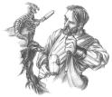

Forums galactiques > Taverne galactique : lieu de discussion informel > une place pour moi dans cet univers?
Pages : 1
| Righteous Réputation à la taverne : 0  07/07 ETU 20:38 | Score : 0 Détails Je découvre tout juste ce jeu et mon interet pour celui-ci ne cesse de grandir. J'aurai voulu avoir quelques renseignements mais surtout des conseils, afin de savoir comment gérer au mieux ma planète. De plus, j'aimerai bien à l'issu de ce message lié contact avec des joueurs aguéri ou néophytes dans le but d'échanges qui seraient pour moi très bénéfiques. Enfin, si quelqu'un à une ame assez charitable ou des relants de générosité, je ne suis pas contre quelques offrandes...^^
En vous remerciant par avance, Amicalement, Righteous. | ||
| GéNéSiS Réputation à la taverne : 86  07/07 ETU 20:40 | Score : 0 Détails hehehe vous ne m'étes pas inconnu commandant galtier...
| ||
| VorteX Réputation à la taverne : 97  07/07 ETU 20:42 | Score : 0 Détails Vous me plaisez d'emblée commandant !
Je serais heureux de vous donner des conseils par Mp, et meme peut etre des dons ... enfin disons des pret a long terme ! Je suis Guildien et il ne faut pas nuir a ma réputation ! N'hésitez pas a me contacter ... | ||
| Righteous Réputation à la taverne : 0 07/07 ETU 20:59 | Score : 0 Détails Désolé de vous décevoir mon cher Génésis mais vous faites assurément erreur sur la personne.
Cordialement, Righteous. | ||
| Righteous Réputation à la taverne : 0 07/07 ETU 21:01 | Score : 0 Détails En ce qui concerne Vortex, je n'hesiterai pas à faire appel à votre aide que vous m'octroyer si généreusement.
En attente de faire plus ample connaissance avec vous par MP, Righteous. | ||
| yulée Réputation à la taverne : 220  08/07 ETU 03:20 | Score : 0 Détails Il est possible d'éditer ses précédents messages dans un laps de temps d'une demi-heure, commandant.
Vous n'avez qu'à cliquer sur le crayon bleu à côté du triangle jaune. |
Pages : 1
Forums galactiques > Taverne galactique : lieu de discussion informel > une place pour moi dans cet univers?